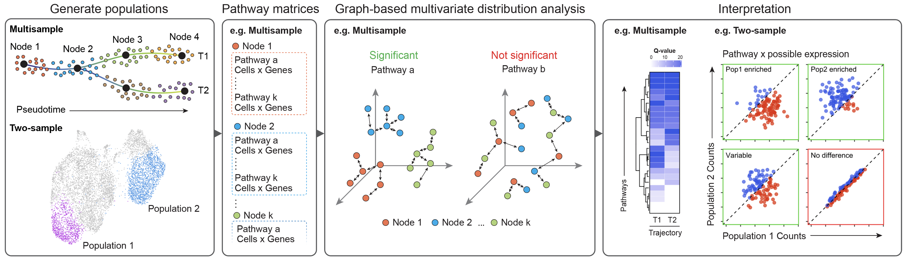

SCPA is a method for pathway analysis in single cell RNA-seq data. It’s a different approach to pathway analysis that defines pathway activity as a change in multivariate distribution of a given pathway across conditions, rather than enrichment or over representation of genes.
This approach allows for a number of benefits over current methods:
Multivariate distributuion testing allows for the identification of pathways that show enrichment in a given population AND also pathways that show transcriptional change independent of enrichment. You essentially get the best of both worlds, as pathways with changes in multivariate distribution (high qval) but no overall enrichment (low fold change) are still interestingly different pathways, as we show in our paper. For more on this, see our SCPA interpretation page
SCPA allows for multisample testing, so you can compare multiple conditions simultaneously e.g. compare across 3 time points, or across multiple phases of a pseuodotime trajectory. This means you can assess pathway activity through multiple stimulation phases, or across cell differentiation
Overall the workflow looks like this: generate the populations and pathways to compare > SCPA generates pathway specific expression matrices for all comparisons > SCPA performs graph based multivariate distribution analysis across all pathways and populations > SCPA generates a Qval for plotting and ranking of pathway.
To see the stats behind SCPA, you can see our paper in JASA here
Our paper introducing SCPA and demonstrating its use on a T cell scRNA-seq dataset is published in Cell Reports here
You can install SCPA by running:
# install.packages("devtools")
devtools::install_version("crossmatch", version = "1.3.1", repos = "http://cran.us.r-project.org")
devtools::install_version("multicross", version = "2.1.0", repos = "http://cran.us.r-project.org")
devtools::install_github("jackbibby1/SCPA")If you’re viewing this page on GitHub, the SCPA webpage with all the documentation and tutorials is here
We have various examples and walkthroughs, including:
To report any issues or submit comments please use: https://github.com/jackbibby1/SCPA/issues